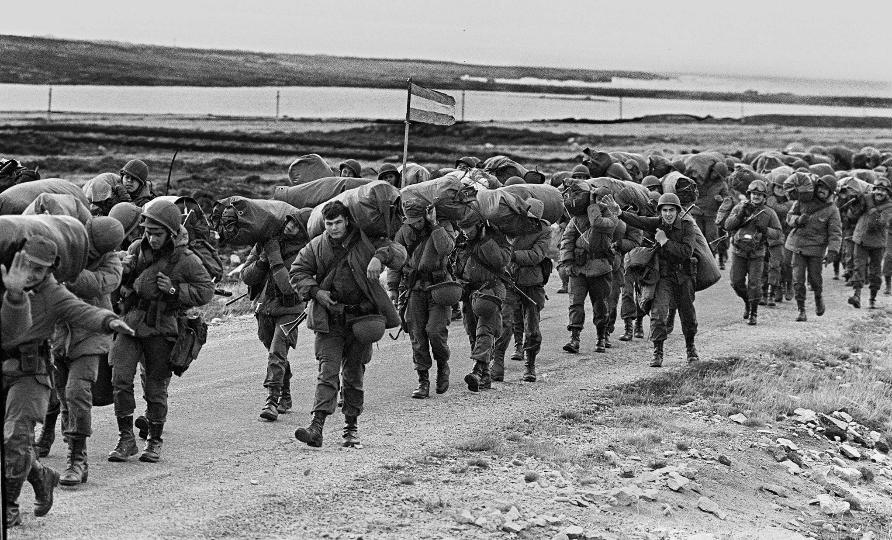

Soldados argentinos que en la Guerra de Malvinas de 1982 combatieron 23.812 personas. El 49% eran jóvenes conscriptos (soldados que cumplían el Servicio Militar Obligatorio) de entre 19 y 20 años sin experiencia militar. El conflicto dejó un saldo de 649 combatientes argentinos fallecidos

Malvinas, siempre argentinas.

Uno de los aviones utilizados en la guerra.

Monumento a los caidos de Malvinas.

El Monumento a los Veteranos y Caídos en la Guerra de Malvinas en Cipolletti es un homenaje a los héroes que defendieron la soberanía nacional en el conflicto de Malvinas. Este monumento, inaugurado en 2024, es una muestra de la memoria colectiva y el compromiso con la historia reciente del país. La ciudad de Cipolletti, en la provincia de Río Negro, es conocida por su papel central en la conmemoración de este conflicto, con actos y actividades que buscan rendir homenaje a quienes defendieron la causa Malvinas.

Soldados de Malvinas